概述：随着网络的逐渐普及，人们对其的需求越来越强，各种服务，平台应运而生，而平台与服务在公网的暴露也增加了受攻击的风险，而 Linux 中的最重要的守护神 iptables 的地位也显得越来越重要。本实验将带大家初识 iptables。当然学习本实验之前有一定的网络基础知识能够帮助理解。
实验涉及的知识点
- iptables 的发展
- iptables 的结构
- iptables 的使用
0x01 iptables 的发展
上个实验中我们了解到，防火墙也就是工作在主机或者网络边缘，对进出的报文按事先设定的规则进行检查，并对匹配的数据包做出处理的一组硬件或者是软件，设置软硬件的结合体。
而在 Linux 的中的防火墙当然也就是那么一组软件对数据包的处理，Linux 中的防火墙主要是进行一些包的过滤，而这套防火墙也不是一开始便如此的强大，是这样的一个发展过程：
- Linux内核2.0： ipfwadm
- Linux内核2.2： ipchains
- Linux内核2.4： iptables
而为什么随着内核版本的升级，我们的使用的防火墙也在不断地变化，首先 ipchains 相较于 ipfwadm 有这样一些优势：
- Qos（Quality of service）的支持
- ipchains 是树形结构的链，而 ipfwadm 是线性的结构，树形结构能够做到在自己拥有链的情况下再去接受其他跳转过来的链
- ipchains 比 ipfwadm 在配置上更加的灵活
- ipchains 可以明确地过滤任何的 ip 协议，不仅仅是TCP]、UDP、ICMP
而 iptables 之所以能够替代 ipchains 是因为它具有以下一些优势：
- 可以追踪有状态的 IPV4 的协议与应用
- 可以追踪有状态的IPv6] 的协议
- 能够做到 NAT 的 一对多与多对多
- 内建的 PORTFW 功能
若想了解很多的信息可以在这里看到
iptables 就是目前工作于较新版（内核版本高过2.4的） Linux 内核中的强大的数据包过滤的软件，它主要是由两部分组成
- iptalbes：主要工作于用户空间，为用户提供了一个编辑规则的接口。
- netfilter：主要工作于内核空间，是内核的一部分，由一些过滤表组成。
netfilter 工作于系统的内核空间，最底层的工作，所以真正令过滤规则生效的并不是 iptables 而是 netfilter，而 iptables 工作在 netfilter之上，是一个让用户编写规则的工具。
netfilter/iptables 是 Rusty Russell 在1998年就开始写的一个项目，netfilter 是 Linux 内核中的一个框架，因 Linux 拥有高模块化的内核，所以 Linux 很多功能都以模块形式存在，而模块化的设计最大的优点在于“弹性”，我们可以通过Linux的模块管理工具，随心所欲地将模块载入内存与移除内存，因此 Netfilter 也是以模块的形式存在于 Linux 中。，采用极度模块化的设计，使其的拥有更好的扩充性以及很强的灵活性，提供一种特定的方式实现定制的模块，允许各种网络相关的操作。iptables 这个应用层的程序便是调用它的接口实现规则的修改。
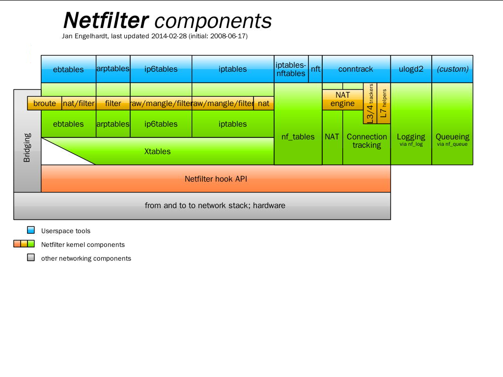
（此图来源于：维基百科)0x02 iptables 的结构
Netfilter 所设置的规则是存放在内存中的，而 iptables 通过 Netfilter 放出的内核接口 ip_tables 来对存放在内存中的 Netfilter 配置表进行修改。这个配置表主要由 tables、chains、target 组成。
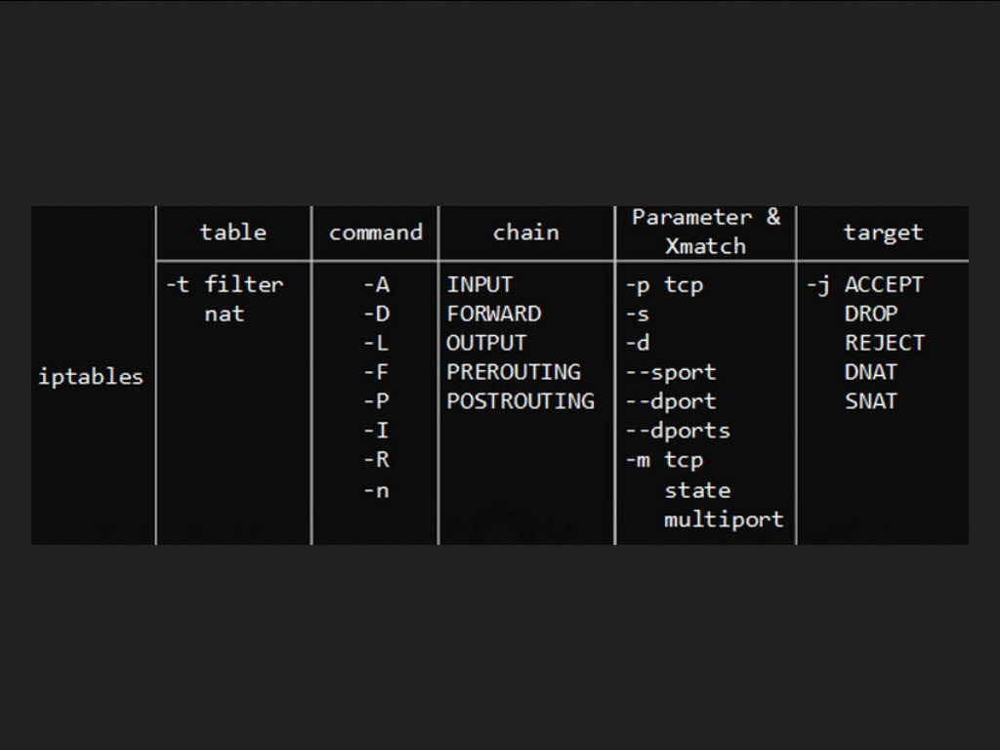
此图片来源于http://byrev.space/free/wp-content/uploads/sites/3/iptables-linux.png{kind=link}
其中表主要有这四张：
- filter表
- NAT表
- mangle表
- raw表
每个表中可以用的 chains 不全相同，当然 iptables 支持新建 chains，而 chains 是 Netfilter 框架中制定的对数据包的Hook] PointHook] Point 是一个数据包通过网卡流经系统内核相应的位置时会对数据包的流向做出一定的修改，在系统上存在5个Hook] Point 的挂载点
- PREROUTING
- INPUT
- OUTPUT
- FORWARD
- POSTROUTING
target 中大部分是通用的，当然有部分是特定使用的，这里只列举常用的几种规则，更多的规则大家可以使用 man 来查看
- ACCEPT：一旦包满足了指定的匹配条件，就会通过，并且不会再去匹配当前链中的其他规则或同一个表内的其他规则，但它还要通过其他表中的链
- DROP：一旦包满足了指定的匹配条件，将会把该包丢弃，也就是说包的生命到此结束，不会再向前走一步，效果就是包被阻塞了。不会返回任何的消息
- REJECT和DROP基本一样，一旦包满足了指定的匹配条件，将会把该包丢弃，但是它除了阻塞包之外，还向发送者返回错误信息。
- SNAT：一旦包满足了指定的匹配条件，源网络地址转换
- DNAT：一旦包满足了指定的匹配条件，目的网络地址转换
- MASQUERADE和SNAT的作用相同，区别在于它不需要指定–to-source
- REDIRECT：一旦包满足了指定的匹配条件，转发数据包一另一个端口
- RETURN：一旦包满足了指定的匹配条件，使数据包返回上一层
- MIRROR：颠倒IP头部中的源目地址，然后再转发包
0x03 filter表的认识
其中 filter 表的主要作用就是对数据包的过滤，访问控制（相类似的有思科自己开发的 ACL）。该表下有三个规则链：
- INPUT 链：INPUT 针对那些从外进入本地，也就是目的地是本地的包
- FORWARD 链：FORWARD 针对所有不是本地产生的并且目的地不是本地(即本机只是负责转发)的包
- OUTPUT 链：OUTPUT 是用来针对所有本地生成的包
在内核中使用 iptables_filter 这个模块，在代码中各模块都是相对独立的初始化，此模块的初始化在源码 net/ipv4/netfilter/iptable_filter.c –>iptable_filter_init 中，我们可以在 filter 的初始化函数 iptables_filter_init 中我们可以看到注册 Hook point 的函数接口 nf_register_hooks 中是这样写的
static struct nf_hook_ops ipt_ops[] __read_mostly = {
#这是注册的INPUT的链
{
.hook = ipt_local_in_hook,
.owner = THIS_MODULE,
.pf = NFPROTO_IPV4,
.hooknum = NF_INET_LOCAL_IN,
.priority = NF_IP_PRI_FILTER,
},
#这是注册的FORWARD的链
{
.hook = ipt_hook,
.owner = THIS_MODULE,
.pf = NFPROTO_IPV4,
.hooknum = NF_INET_FORWARD,
.priority = NF_IP_PRI_FILTER,
},
#这里注册的是OUTPUT的链
{
.hook = ipt_local_out_hook,
.owner = THIS_MODULE,
.pf = NFPROTO_IPV4,
.hooknum = NF_INET_LOCAL_OUT,
.priority = NF_IP_PRI_FILTER,
},
};并且最终的调用的代码中也都调用到了
/* Returns one of the generic firewall policies, like NF_ACCEPT. */
unsigned int
ipt_do_table(struct sk_buff *skb,
unsigned int hook,
const struct net_device *in,
const struct net_device *out,
struct xt_table *table)由此我们了解到在 filter 初始化的时候便是只注册了三个 Hook point，当然我们可以修改源码做自己定制化的 filter，这里便不再过多地深入了，有兴趣的同学可以去 netfilter 的官网下载源码研究研究
0x04 NAT表的认识
其中 NAT（Network Address Translation） 表主要用于修改数据包的报头的 IP 地址、端口号等信息。可以实现数据包伪装、平衡负载、端口转发和透明代理。该表包含三个链：
NAT 是一种把内部网络的 ip 地址转换为合法的公网 ip 地址，当私有网主机和公共网主机通信的IP包经过NAT网关时，将 IP 包中的源IP或目的 IP 在私有 IP 和 NAT 的公共 IP 之间进行转换。能够有效的解决公网地址不足的问题，在一定程度上起到安全的作用
PREROUTING链：作用是在包刚刚到达本机时，路由之前改变它的目的地址OUTPUT链：改变本地产生的包的目的地址POSTROUTING链：在包就要离开防火墙之前改变其源地址
我们可以通过这样一张图来了解到 Header 中的信息什么样的，NAT 具体修改的内容
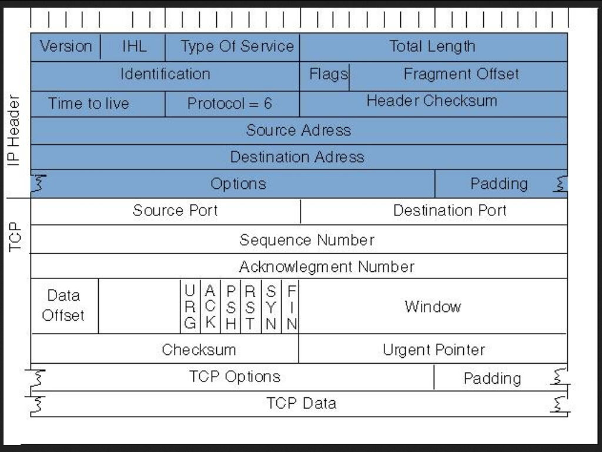
NAT 分为三种类型
- 静态 NAT（static NAT）：ip 地址在转换时是一种一对一的关系
- 动态 NAT（dynamic NAT 或者叫 pooled NAT）： ip 地址在转换时是一种多对多的关系
- NPAT（Network Address Port Translation）：网络地址端口转换在 ip 地址的层面上来说是属于一种多对一的关系
NPAT是把内部地址映射到外部网络的一个IP地址的不同端口上，，但是这里虽然是将多个内网 ip 地址转换为一个公网地址，但是这里的地址是公网地址+端口号的形式，而不是简单的一个公网地址。
在 iptables 中我们比较常用 NPAT 的形式，而 NPAT 又细分为以下的两种：
- 源 NAT（SNAT，Source NAT）修改数据包的源地址。源NAT改变数据流的第一个数据包的来源地址，数据包伪装就是一具SNAT的例子。
- 目的 NAT（DNAT，Destination NAT）修改数据包的目的地址。它是改变第一个数据包的目的地地址，如平衡负载、端口转发和透明代理就是属于 DNAT。
若是要做 SNAT 的数据包需要添加到 POSTROUTING 链中。要做 DNAT 的数据包需要添加到 PREROUTING 链中。直接从本地出站的信息包的规则被添加到 OUTPUT 链中。
因为 SNAT 是修改的源地址，然后通过发送出去，给其他的网络设备解读，所以必须在发送出去之前进行 SNAT。所以数据包是送往 POSTROUTING 链，并且匹配了规则，则执行 DNAT 或 REDIRECT 目标。便可在路由之后修改源地址了。
因为 DNAT 是修改的目的地址，然后通过路由转发出去，为了使数据包得到正确路由，必须在路由之前进行 DNAT。所以数据包是送往 PREROUTING 链，并且匹配了规则，则执行 DNAT 或 REDIRECT 目标。便可在路由之前修改目的地址了。
路由是内核检查数据包的报头信息
但是 NAT 也不是完美的，它也是有缺陷的，如我们在使用 VPN 的时候便是对数据的加密，而若是数据包的信息被修改过，该包将被丢弃，所以需要 NAT 穿透技术，感兴趣的可以更深入的研究。
0x05 mangle表的认识
其中 mangle 表主要用于修改数据包的 TOS（Type Of Service，服务类型，根据不同的服务质量。来选择经过路由的路径）、TTL（Time To Live，生存周期，每经过一个路由器将减1，mangle 可以修改此值设定TTL要被增加的值，这个选项可以使我们的防火墙更加隐蔽，而不被 trace-routes 发现等等）以及为数据包设置 Mark 标记（特殊标记，用来做高级路由，以使不同的包能使用不同的队列要求，等等），Qos(Quality Of Service，服务质量)调整以及策略路由等应用，由于 TOS，Qos 类似的方式需要相应的路由设备支持，所以应用并不广泛。这里不做过多的讲解，这个表中包含五个规则链：PREROUTING，POSTROUTING，INPUT，OUTPUT，FORWARD。
0x06 raw 表的认识
raw 表是自1.2.9以后版本的 iptables 新增的表，主要用于决定数据包是否被状态跟踪机制处理。在匹配数据包时，raw 表的规则要优先于其他表。包含两条规则链：OUTPUT、PREROUTING
0x07 数据包的状态
iptables中数据包被跟踪连接有4种不同状态：
- NEW：该包想要开始一个连接（重新连接或将连接重定向）
- RELATED：该包是属于某个已经建立的连接所建立的新连接。例如：—icmp-type 0 ( ping 应答) 就是—icmp-type 8 (ping 请求)所RELATED出来的。
- ESTABLISHED ：只要发送并接到应答，一个数据连接从NEW变为 ESTABLISHED ,而且该状态会继续匹配这个连接的后续数据包。
- INVALID：数据包不能被识别属于哪个连接或没有任何状态比如内存溢出，收到不知属于哪个连接的 ICMP 错误信息，一般应该 DROP 这个状态的任何数据。
我们对每一张表以及每一个链都有了一个大体上的认识，我们可以通过这样一张表了解到我们的数据包在我们的内核中是怎样的一个前进的过程，到底要经过多少次审核，多少个关卡
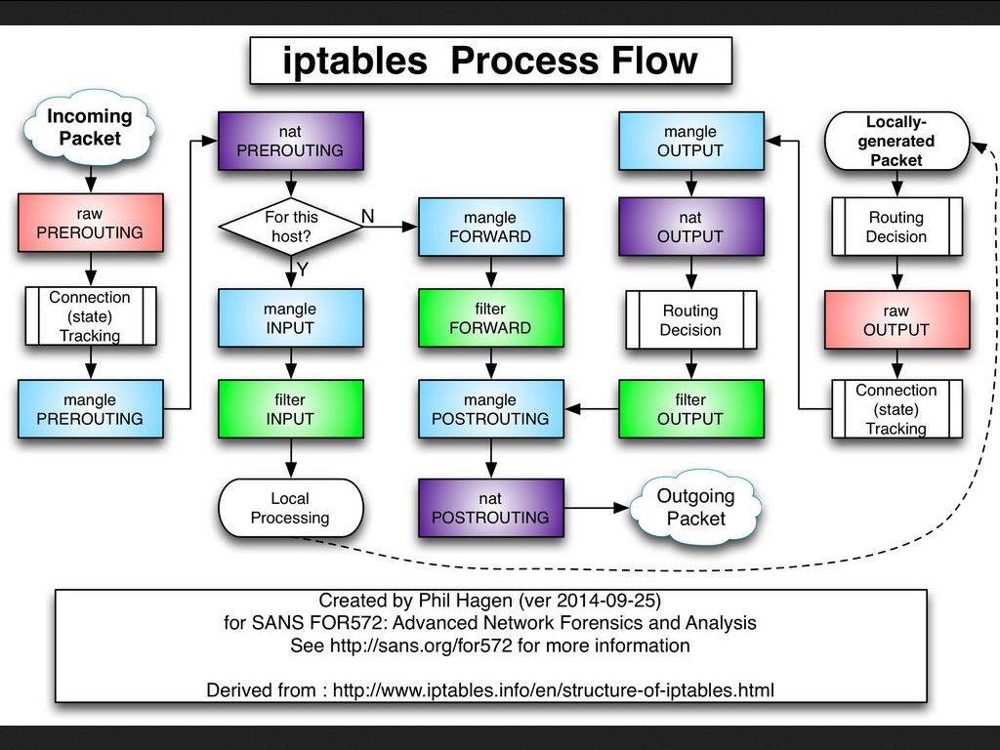
从这张图中我们可以了解到每个数据包的进与出都会经历这样的一个流程
- 当有数据包进入网卡时，数据包首先到
PREROUTING链中，若是有表对应的表匹配，首先应该是到raw中，然后到mangle中最后到NAT的PREROUTING链中，上文我们也提过PREROUTING链中我们有机会在到内核的路由模块之前修改数据包的目的IP，然后内核的”路由模块”根据数据包目的 IP 以及内核中的路由表判断往哪里转发(注意，这个时候数据包的目的地址有可能已经被我们修改过了) - 若是该数据包的目的地址就是本机的地址，也就是该数据包就是发送给本地的，那么就会进入
INPUT链，而进入INPUT链首先到mangle表中看看，然后到filter表中看看。通过之后便会发给本地的相应的程序 - 本地相应的程序若是做出响应，产生新的数据包往外发送，数据包将进入到
OUTPUT链，而在OUTPUT链中与INPUT链匹配表的顺序相同，依旧是首先查看raw表，然后查看mangle表，查看NAT表 ，最后查看filter表，若是该数据包还能继续前进将会被发送到POSTROUTING链中。 - 若是之前该数据包的目的地址并不是本机，只是把这里当中转站的话，就会将该数据包发给
FORWARD链，在FORWARD链中，依旧先查看mangle表，然后查看filter表，若是该包还能进去前进则将进入POSTROUTING链中 - 在
POSTROUTING链中首先查看mangle表，然后查看NAT表，因为他们可以在最后发送出去之前修改数据包中的源地址。 - 通过这些的层层把关，最后数据包便可以从网卡发送出去了
从数据包在内核中的走向我们可以得出以下几点，也是我们需要着重注意的几点：
iptables中匹配规则的表示有顺序的，我们可以得出优先级的顺序是raw 表> mangle 表> NAT 表> filter 表iptables中的表里面的链的规则也是有匹配顺序的，优先级的顺序是PREROUTING > INPUT FORWARD OUTPUT POSTROUTING
我们在使用 iptables 的时候特别应该注意我们的规则顺序，在一个表中的规则是从上到下的读取，而一经查看到匹配的规则，便不会继续往下读取匹配，所以我们时常会遇到我们写了规则之后似乎并没有生效的情况便是这样。
0x08 iptables 的使用
说得再多，我们得不到实际的效果，我们也不会有特别深刻的理解，我们来实际的使用一次
首先我们可以使用这样的一个命令来查看当前 iptables 中已经写下的规则
sudo iptables -nL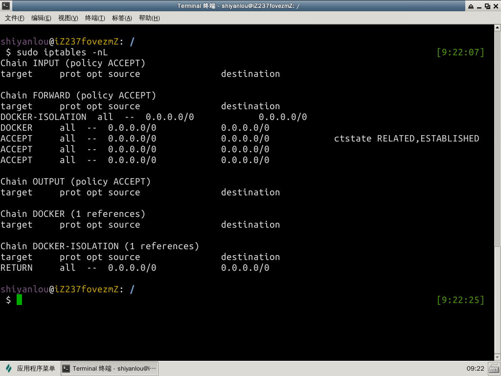
从结果中我们可以看到分布在每条链中的已经写入的规则，若我们还想到跟详细的结果可以使用这样的一个命令
sudo iptables -nvL --line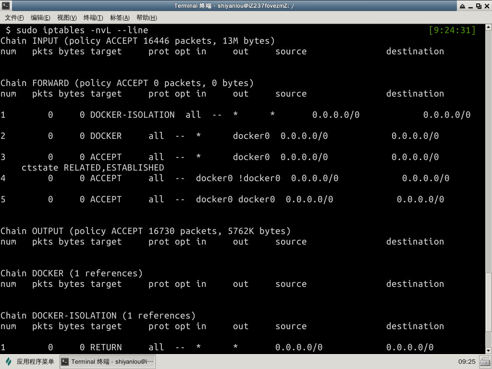
- 第一列
num显示了该规则在该链中的顺序位置 - 第二列
pkts显示了该规则处理的数据包数 - 第三列
bytes显示了该规则处理的字节数， - 第四列
target显示了该规则所做的行为， - 第五列
port匹配的端口 - 第六列
opt是TCP协议头部中options的一部分，并不是重点，我们可以不必关注，有兴趣的也可以通过维基百科深入了解 - 第七列、第八列
in、out分别表示对从网卡进入与出去的限制 ip 的匹配条件 - 第九列、第十列
source、destination表示对包中分析得出的数据源地址与数据的目的地址的匹配
我们还可以通过一种方式来查看已经生效的规则，这种方式查看到的是我们直接插入的规则，而不是像以上两个命令经过分析后的结果：
sudo iptables-save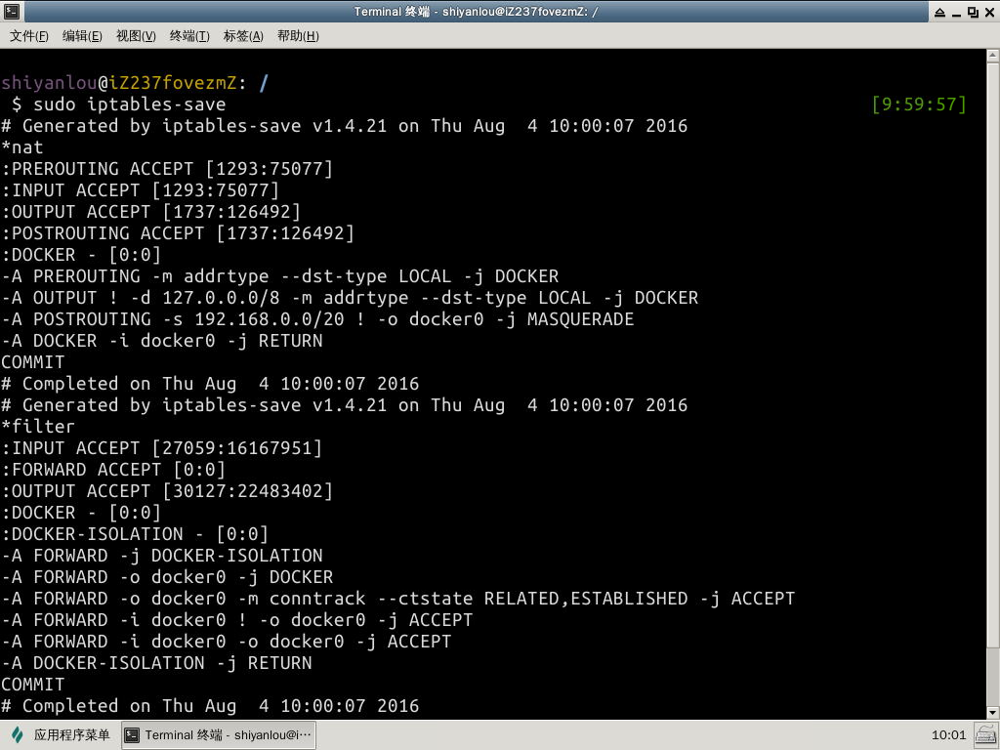
当然 iptables-save 有一个参数 -t 可以指定我们要保存的表，到某个文件中去
#在执行该命令之前请先用sudo su 切换到 root 用户
iptables-save -t filter > filter.bak
cat filter.bak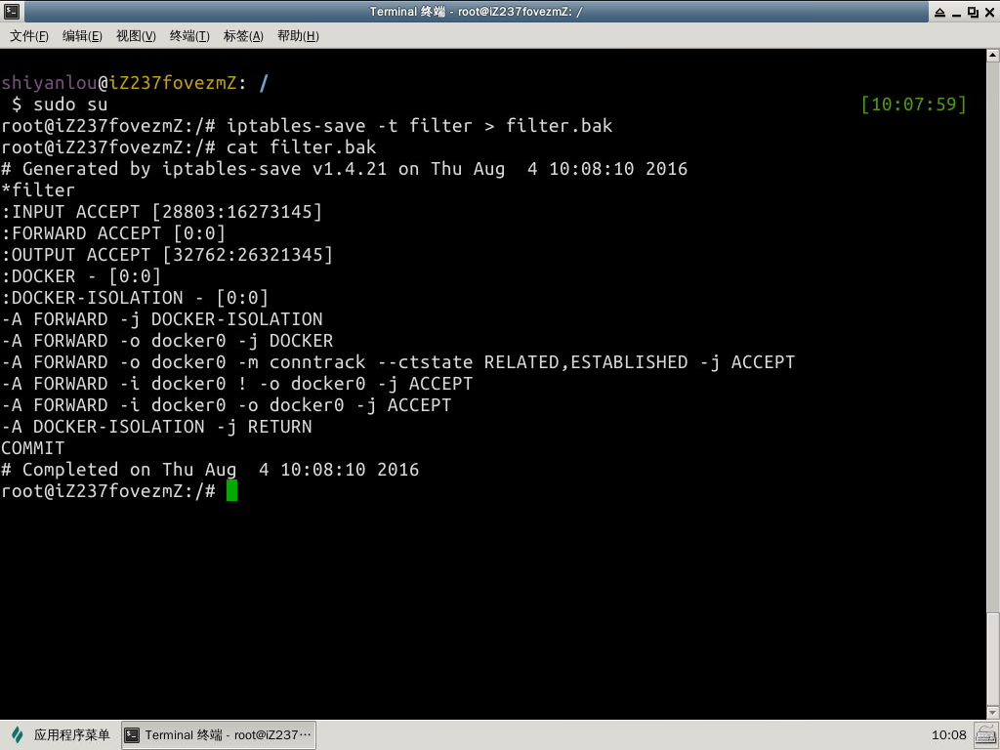
上我们我们提到过，iptables 是一个可调用内核接口来对存放在内存中的 Netfilter 配置表进行修改、编辑的一个工具，既然是修改的内存中的配置表，所以我们并不需要重启防火墙什么的，修改后的规则会立即生效。
我们再来回顾一下在编写规则时我们需要书写哪些参数：

我们可以做这么一个例子，将所有访问我们 80 端口的数据包全部丢掉
首先我们来验证 80 端口是开发的，可以访问的
#首先本实验环境没有装 apache 服务我们需要安装一下，然后启动服务
sudo apt-get install apache2
sudo service apache2 start
netstat -lunpt | grep 80
#尝试看我们能否访问该页面，若返回值为 200 则为成功访问
curl -I localhost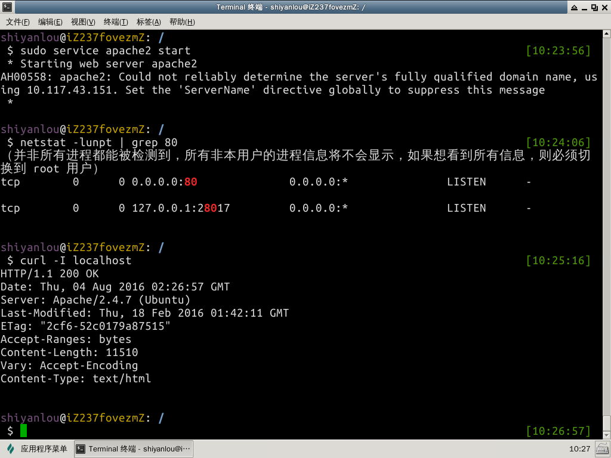
然后我们来添加这么一条规则，并查看他是否写入了规则表当中
sudo iptables -t filter -I INPUT -p tcp --dport 80 -j DROP
#仅仅只是查看 INPUT 链是否加入了这条规则
sudo iptables -nvL INPUT
#然后我们再来尝试一次，能否查看到该网页
curl localhost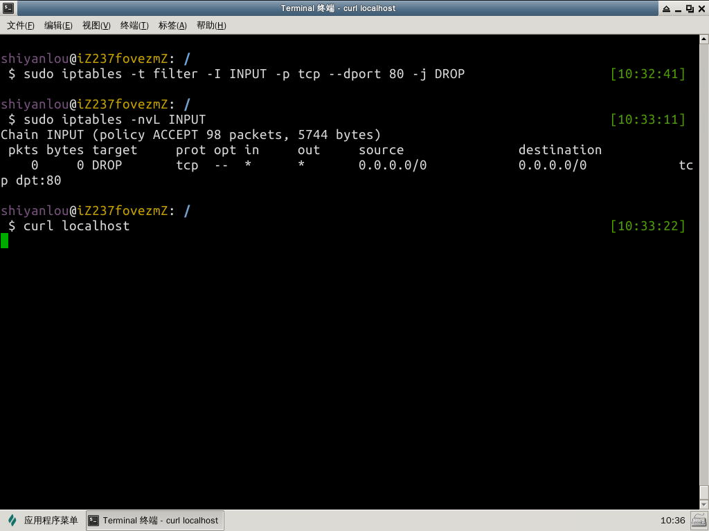
是得不到，但是为什么会一直停留在那里，是因为我们是用的 DROP 将所有来访问该页面的数据包丢掉，不给任何返回，响应，而 ~却很钟情的一直等待着服务端的响应。若我们将 DROP 行为改成 REJECT 的话，就会有返回信息说这个端口无法访问。
#删除我们之前添加的规则，这里没有添加 -t 的参数
#是因为不指明该参数，系统默认为修改 filter 表
sudo iptables -D INPUT -p tcp --dport 80 -j DROP
#添加拒绝的规则
sudo iptables -I INPUT -p tcp --dport 80 -j REJECT
#再次验证
curl localhost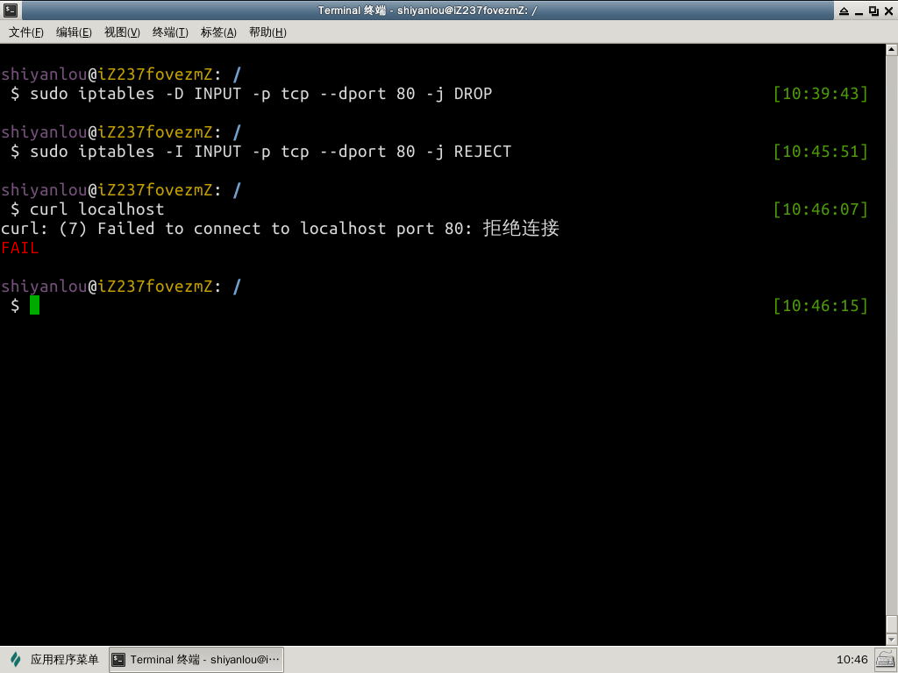
通过上面的例子大家可以看到 iptables 已经修改便会立即生效，在修改规则的时候我们会用到各种参数，下面列出一些常用的参数
| 参数 | 解释 |
|---|---|
| -t | 制定我们修改或者添加的规则是放入那个表，若是没有指定默认为 filter 表 |
| -A | 表示我们添加的这个规则追加在表的最后面，append |
| -I | 表示我们指定位置插入当前的这个规则，insert，指定的位置写在链后面 ，若是没有指定则默认值为1，也就是将该规则添加在指定表的指定链的第一位 |
| -D | 删除某条规则，delete，后面可以指明具体的规则，如上面的例子，也可以指定位置，位置同样是放在链的后面 |
| -F | 清除所有的规则，若是后面有跟上链，便只删除该链下的所有规则 |
| -L | 显示规则链中已有的条目 |
| -N | 创建新的用户自定义规则链 |
| -p | 指定要匹配的数据包协议类型,如上文我们使用的tcp |
| -s | 指定要匹配的数据包源ip地址 |
| -i<网络接口> | 指定数据包进入本机的网络接口 |
| -o<网络接口> | 指定数据包要离开本机所使用的网络接口 |
| -j<目标> | 指定要跳转的目标； |
如上文中我们删除一条规则的时候使用的是 -D 后面加具体的规则，其实我们还可以这样去删
#查看我们要删除的规则所在的链与位置
sudo iptables -nvL --line
#删除指定位置的规则
sudo iptables -D INPUT 1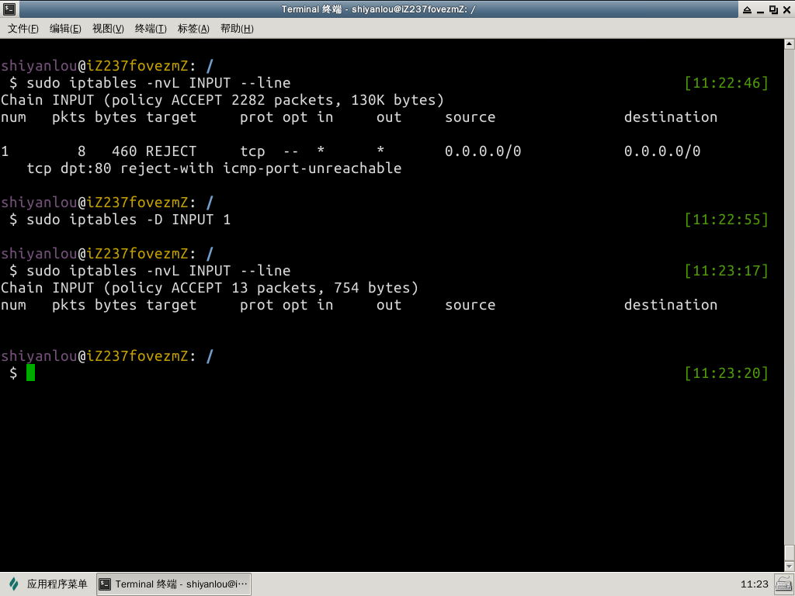